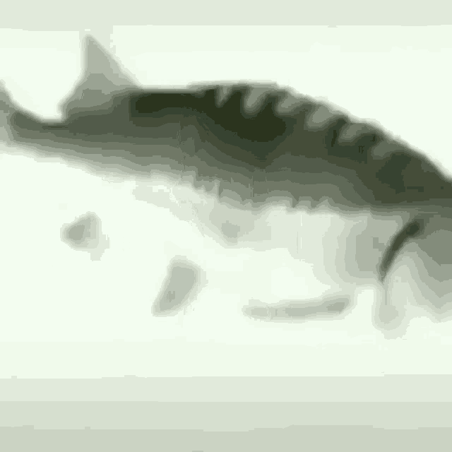
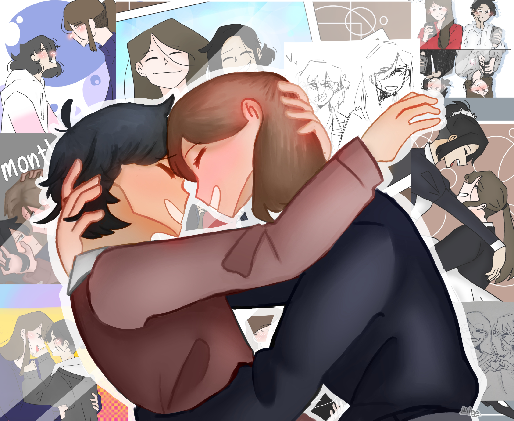
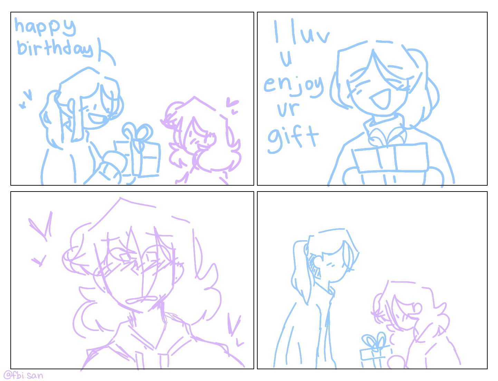
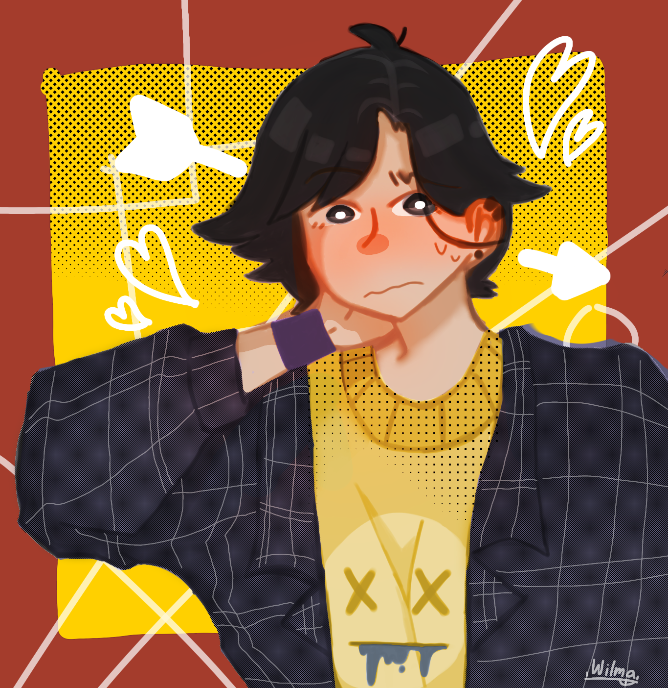
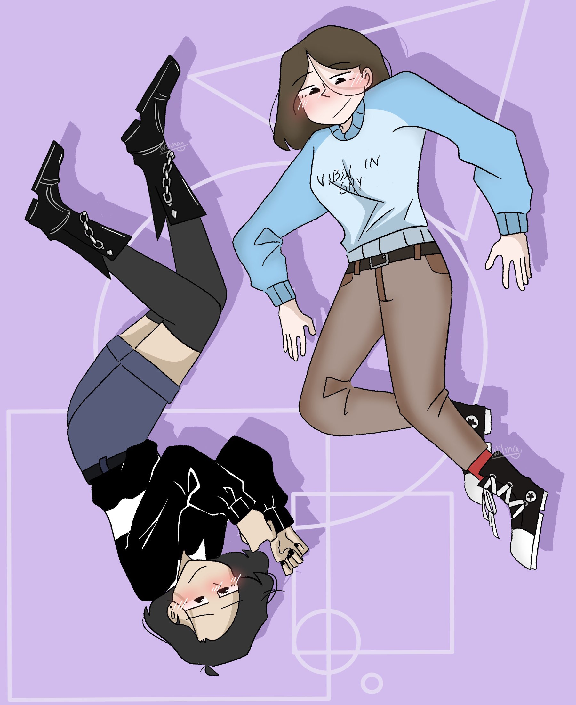
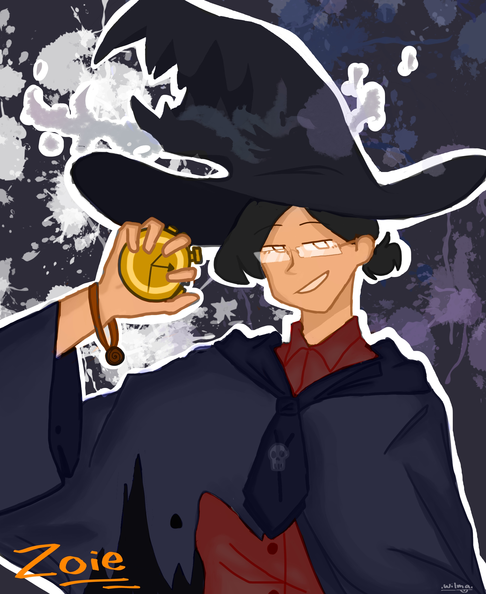

Wima/Fbi Birthday Extravaganza!!
bday wishes for the one and only >:D
HII WILMA ITS ME YOUR GIRLFRIEND AKA FUTURE WIFE JFNFJFJR YOU’RE THE BEST GIRLFRIEND I COULDVE EVER ASKED FOR THANK YOU FOR EVERYTHING YOUVE EVER DONE EVEN JUST EXISTING IM SO THANKFUL FOR IT ALL, AND I HOPE YOU ENJOY YOUR BIRTHDAY I HOPE YOU SO SO SO SO SO SO SOOOOOO MUCH ♡♡♡ (also omggg no way we have a 2 year difference now)
-Your love♡
Today is a special day for you Wima!!! Happy 17th birthday girlie!! Thank you so much for being the dorky glue in our friend group and most importantly staying kind and not caring about what others may think of you. That attitude is very rare and is quite an admirable trait. May you have a wonderful rest of your day! We love you Wimaa♡
-Miggyyy
HEYY FBIII HAPPY BIRTHDAYYY. I LOVE YOU SM YOU'RE SUPER AWESOME AND I LITERALLY ALWAYS LOOK FORWARD TO YOUR DRAWINGS AND THE PICTURES OF THE BIRDS THAT YOU SOMETIMES SEND!! i hope you enjoy your birthday frfr!!
-Gaia
"Girl, u take care of urself. Happy bday wima and i hope u have a wonderful day ahead of you! I pray for ur good health and wellbeing. Cheers from Aiga! We labyuu hahaha"
HAPPY BIRTHDAY FBI so today is your birthday not sure how old you are i should really keep track but today is a great special day the day a great artist, inspiration, and a good friend to me was born you’ve challenged life for another year and you’ve beaten death over and over I’m proud i know you’ll do great things and i wish you a HAPPY BIRTHDAY i wish you many more in the future hopefully I’ll be around to see your art in a museum take care of nothing shes a great person wish you guys a long lasting relationship enjoy your day its all about you
-your friend and local Bandmom
Koro
Hi Wilma!! I'm so glad that I got to meet you, I truly appreciate you throughout this year. You truly are the star in our classroom, our bright star. You're so hella talented and lovable, you're just really amazing, seriously!! I never thought that we could be close and I was so scared to approach you at first, but am glad I got to talk with you a lot the first time we met, it was really nice and I felt warm and just overall happy to meet you. So, thank you... a lot. Please continue what you love doing and always stay you, happy birthday Wilma! We love you a lot ♡ [PS - Invite me to your wedding with your future wife, thank you!!]
-Johan
Although we've only gotten to know each other in such a short span of time, I would already take a bullet in the leg for you :3 Happy Birthday, Wimaa :D 💜💜💜 - Jo :3c
Never gonna give you up
Never gonna let you down
Never gonna run around and desert you
Never gonna make you cry
Never gonna say goodbye
Never gonna tell a lie and hurt you
ps, try not to get hacked
-b0t/padoru
happy bday wimamimaamaaiamaiamamm u r now 1 yr closer to adulthood, ur a rlly fun person to be around n u’d always talk whenever i wanna talk which is rlly comfortin, sad that we dun hangout as much cus we dun skool at the same campus but ey it almost christmas break so maybe we can hangout more often like we used to 😩👉👈
-ewingg
Huhburday fbi stay gay stay hardstuck in valorant and stay stuck at 1 viewer on twitch 👍
-notjunha
happy womb escape anniversary to my arsonist partner in crime/the best artist periodt/my platonic wife that one time/expert at being the best friend ever/gay art enthusiast/lover of women/the cinnamon roll samoyed of my life/LITERALLY THE SWEETEST, MOST SUPPORTIVE, MOST CARING, MOST COMPASSIONATE AND AWESOMEST PERSON IVE EVER KNOWN
ilysm(platonically ofc), hope you have an amazing rest of ur bday u deserve it >:D
-zoiee
Heyyy Wimaaa! It's meee Seann.. Ykw I'm so so so so happy to be your friend! I'm glad that I get to meet someone who is so amazing, colorful, and all! I love you so much Wimaaa! Thank you for being such a good and incredible friend to me. Thank you for accepting me for who I am, and for encouraging me to do what I want, and to be who I am, and that I should not care about what others think of me. You are an amazing person!! We might not be classmates when we go to college, but that doesn't break our friendship. I will always remember you. You will always be inside my heart. All of you! All the people who made me feel alive this year.. Y'all are amazing! And even though life is so stressful, that's including school btw XD! You make me forget them. I love our hangouts sm!! Especially when we're at Kuyangs. Everytime I pass there, it y'all that I remember. I was really worried when you weren't feeling well. You were absent, and the classroom felt so different. Tbh at that time, I really missed hearing you singing and playing your ukulele. That is why I texted you the other day. I asked you how you were. Ain't religious, but my worrisome made me pray djdbwjdvsjbdwj I know you are struggling with many things, but I know you can overcome them! You are a strong person Wimaa! I believe in all the things you can do.. This school year would never be amazing without you guyss! Thanks for trying to teach me how to play ukulele btw! I was bad at it, but you really tried to help me as much as possible. So thank you Wimaa! Whenever I see a ukulele, it reminds me of you, Aiga, Miggy, and Jo. I love you guysss so muchhh! I really hope our friendship will still last even when we grow up na.. Stay strong with your girlfriend Wimaaaa! I hope both of you will be able to meet soon. I'll be the happiest person when I see you happy! Both of you.. Keep up with all your talentsss!^^ Happy Birthday Wimaaaaa!^^ take care alwayssss, and stay healthy..😌✨💅🎉🧁🎂Heyyy Wimaaa! It's meee Seann.. Ykw I'm so so so so happy to be your friend! I'm glad that I get to meet someone who is so amazing, colorful, and all! I love you so much Wimaaa! Thank you for being such a good and incredible friend to me. Thank you for accepting me for who I am, and for encouraging me to do what I want, and to be who I am, and that I should not care about what others think of me. You are an amazing person!! We might not be classmates when we go to college, but that doesn't break our friendship. I will always remember you. You will always be inside my heart. All of you! All the people who made me feel alive this year.. Y'all are amazing! And even though life is so stressful, that's including school btw XD! You make me forget them. I love our hangouts sm!! Especially when we're at Kuyangs. Everytime I pass there, it y'all that I remember. I was really worried when you weren't feeling well. You were absent, and the classroom felt so different. Tbh at that time, I really missed hearing you singing and playing your ukulele. That is why I texted you the other day. I asked you how you were. Ain't religious, but my worrisome made me pray djdbwjdvsjbdwj I know you are struggling with many things, but I know you can overcome them! You are a strong person Wimaa! I believe in all the things you can do.. This school year would never be amazing without you guyss! Thanks for trying to teach me how to play ukulele btw! I was bad at it, but you really tried to help me as much as possible. So thank you Wimaa! Whenever I see a ukulele, it reminds me of you, Aiga, Miggy, and Jo. I love you guysss so muchhh! I really hope our friendship will still last even when we grow up na.. Stay strong with your girlfriend Wimaaaa! I hope both of you will be able to meet soon. I'll be the happiest person when I see you happy! Both of you.. Keep up with all your talentsss!^^ Happy Birthday Wimaaaaa!^^ take care alwayssss, and stay healthy..😌✨💅🎉🧁🎂
wima art appreciation wall :DD
✨YALL THIS ISNT EVEN THE HALF OF IT SHES SO FREAKING TALENTED FRR✨




